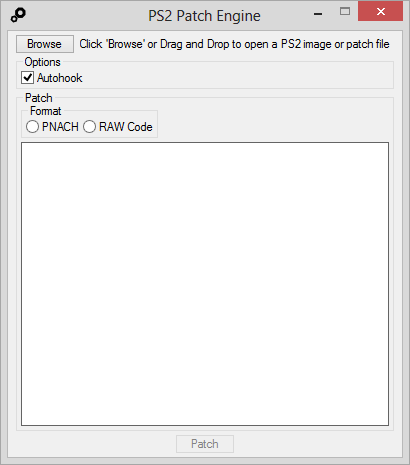

Widescreen (16:9) for PlayStation 2 games¶
Note : This can NOT be achieved using the “Widescreen” option from OPL display settings page.
Previews :

Final Fantasy X-2

Mortal Kombat: Shaolin Monks
As you may know (or not), some PlayStation 2 games natively support 16:9 ratio. However,
there is no real standard about how to enable it : somes games required 16:9 to be enabled in PlayStation 2 system configuration menu to be displayed in widecreen ratio, while some others has their 16:9 option in their own display settings menu (in game) ;
some games has their 16:9 ratio just skewed ;
some other games just doesn’t support 16:9.
It’s now possible to get proper 16:9 on a large amount of PlayStation 2 games. They are several methods to achieve this. Here’s 2 of them.
Method 1 : patch the game image :¶
PS2 Patch Engine tool
Basic step-by-step :
Note : WS .pnaches are game specific, which means you can’t apply a NTSC-U .pnach over a PAL game and vice-versa (example).
Method 2 : using OPL+PS2RD :¶
Process is exactly the same as you would do for any other cheats codes – except the fact you also need to convert 16:9 patches from .pnach to RAW codes.
Basic step-by-step :
SLES_544.39.cht :
Master Code
9020FB28 0C0FBB2A
Widescreen Code
201974d4 3c014455
20344864 3c014455
Note : mastercodes and WS *.pnaches are game specific : you can’t use a PAL mastercode for a NTSC-J game, nor apply a NTSC-U .pnach over a PAL game and vice-versa (example).